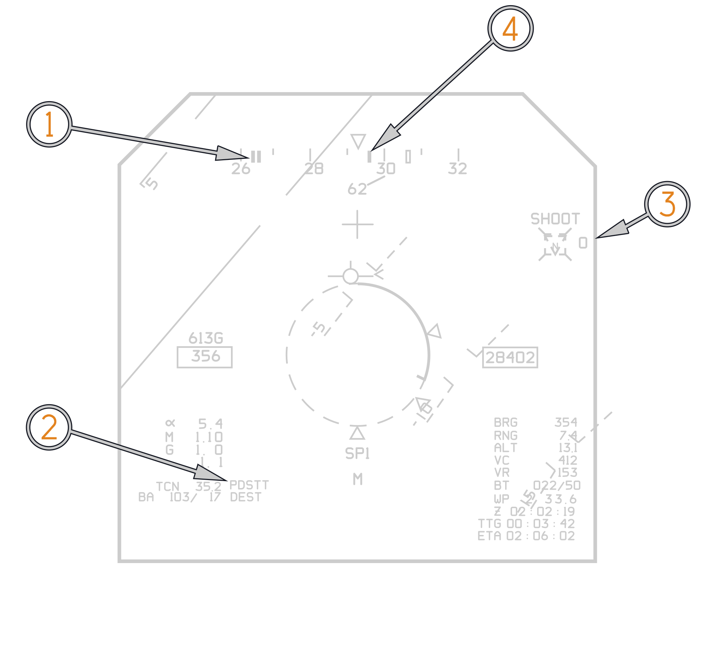
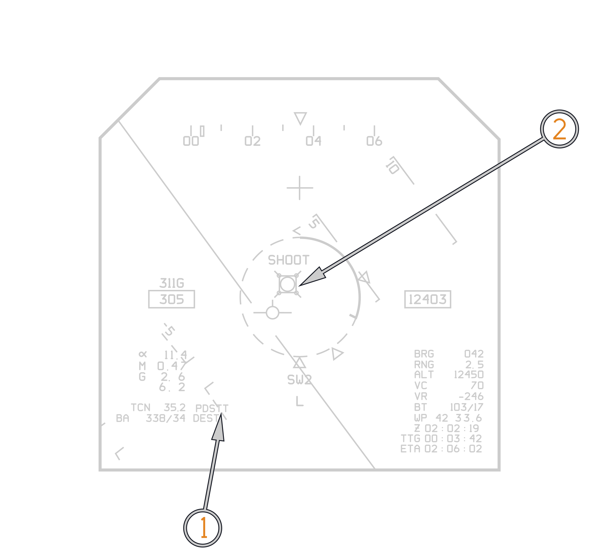
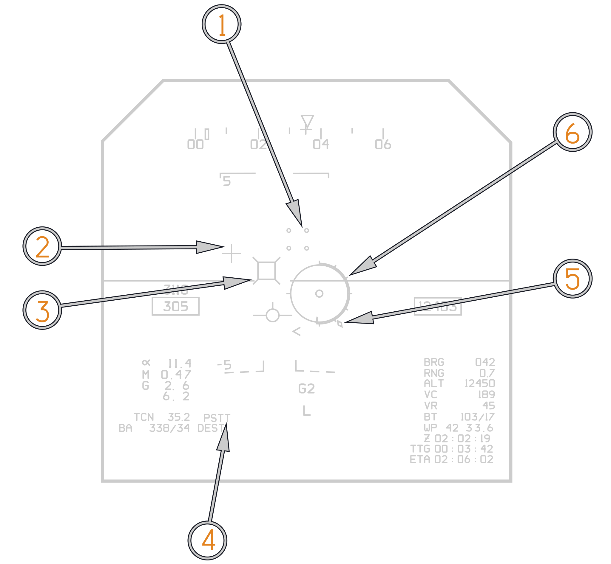
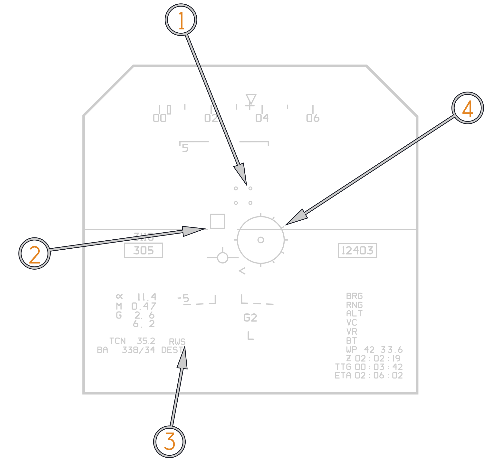
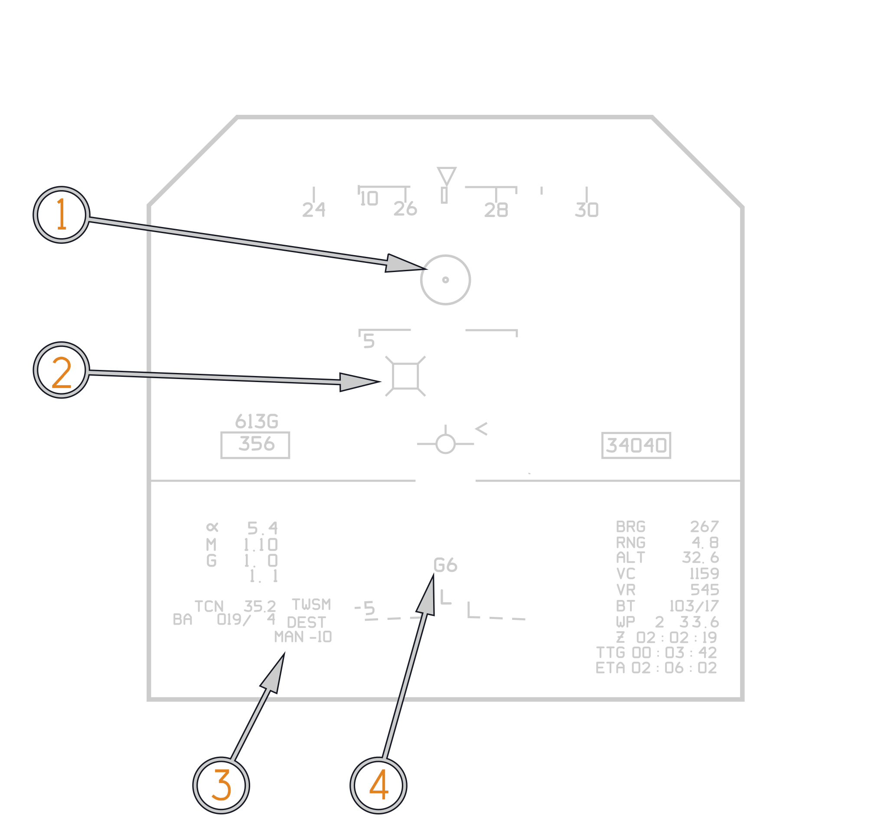
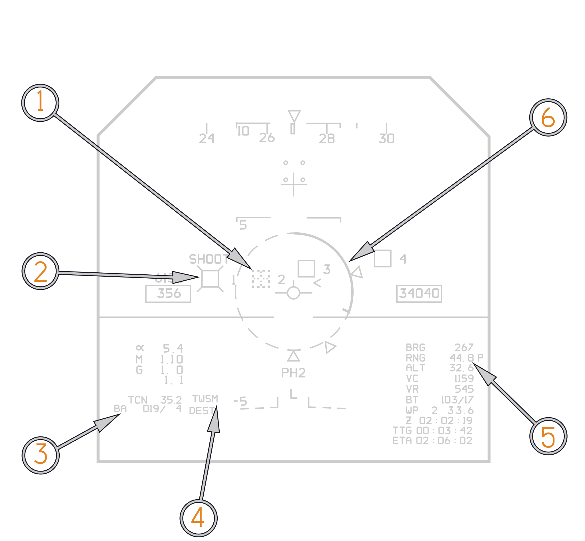

Vertical Display Indicator Group Replacement A/A
The VDIG-R (Vertical Display Indicator Group Replacement) was introduced as part of the F-14B upgrade program to address the limitations of the original F-14A-era pilot displays and HUD.
For air-to-air employment, the VDIG-R serves as the pilot's primary tactical display. During A/A combat the pilots need to reference the HSD for situational awareness is greatly reduced, all TWS tracks are displayed directly in the HUD. Tracks hooked by the RIO are denoted with whiskers and associated track information is posted on the right side of the HUD. An angle off nose indicator directs the pilot to hooked TWS tracks outside the HUDs field of view. The following section will describe the VDIG-Rs A/A symbology in detail.
VDIG-R Symbology common to all A/A formats
Target Designator (TD) Box
TD box either represents radar target line of sight for a Single Target Track (STT), or the location in azimuth and elevation for each Track While Scan track. All tracks built by the AWG-9 in TWS are presented in the HUD as target designate boxes. A FONO (a numeral from 1 to 6) or a TOF counter (0 to 99 seconds) will be displayed to the right of the TD box.
| Target Designate Box Variation | Meaning | Target Designate Box Variation | Meaning |
|---|---|---|---|
| Unknown |  | Friendly | |
 | Unknown Hooked |  | Friendly Hooked |
 | Hostile |  | Outside IFOV |
| Hostile Hooked | Outside IFOV Hooked |
Note: any type of TD box (UNKNOWN, FRIEND, HOSTILE) becomes dashed when outside the IFOV.
TD Box Modifiers
"Whiskers" indicate associated track is hooked, shape indicates track classification (UNKNOWN, FRIEND, HOSTILE).
Active Cue "ACT"
indicates AIM−54C Active parameters met.

Shoot Cue
"SHOOT" − indicates target between Rmax and Rmin ranges.
FFDL Wingman
Symbology similar to PTID, displayed on HUD when FFDL wingman is within +/-45° of own A/C nose, and less than 4 TD boxes are present.
RWR Symbols
ALR−67 RWR HUD symbology.
| Icon | Meaning |
|---|---|
 | Seaborne Threat Radar |
 | AAA Threat Radar |
 | SAM Threat Radar |
 | A/A Threat Radar |
 | Unknown Threat Radar |
Steering Tee
The Steering Tee symbol provides three types of steering commands in the A/A mode. The VDI steering tee information is displayed on both VDI and HUD.
-
When an A/A weapon is selected, the steering tee is used in conjunction with the ASE circle (LRD described below) for weapons steering.
-
If the radar is in STT without a weapon select (no ASE circle), the steering tee provides RIO selected attack steering.
-
When in TWS AUTO, the steering tee provides steering to a weighted centroid of TWS targets.
The steering is referenced to the Launch Range Designator to determine allowable steering error for weapon steering of SW, SP or PH.

Launch Range Designator (LRD)
The Launch Range Designator presents normalized target range, maximum range (Rmax), median range (Ropt) and minimum range (Rmin) launch cues to the pilot. It consists of a dashed circle, a solid range tape with reference tic and three triangles that represent Rmax, Ropt and Rmin. The range tape (and reference mark) is a circular arc that unwinds counterclockwise to show normalized target range, uncovering the dashed circle. The Rmax cue is placed at the 6:00 position of the circle, the Rmin cue is placed at the 2:30 position, and Ropt is placed per the Ropt calculation. It is shown with all A/A weapons except GUN.
Target Angle Off Nose Indicator
The HUD displays a relative bearing readout below the center of the heading scale that provides bearing to the currently hooked A/A Track, or an indication to of the most direct route to the LP for a hooked GGW target. The arrow indicates the direction to steer, and the numerical readout provides the number of degrees to turn. The Angle Off Nose indicator is paired with the Target Locator Line (TLL).
Target Locator Line
TLL originates at Angle Off Nose (AON) readout and points to the currently selected TD box if the TD box is outside the HUD IFOV. TLL points in azimuth elevation. Displayed in A/A only.
F−Pole Cue
Cue to heading for maximum F−pole. Provides cues to achieve maximum slant range between the launch aircraft and target, at the time of missile impact. Displayed in PDSTT and TWSA.
Notch Cue
The Notch Cue is presented on the heading scale and provides the pilot steering to put the F−14 into the beam of the target. The cue is only provided in PDSTT. When the PDSTT lock is broken, the information is stored and the cue is displayed for an additional 15 seconds. Note Due to AWG−9 tracking limitations, after gimbaling the radar, the Notch Cue can initially overshoot the beam by approximately 5 degrees.
A/A Track Info Box
Target Altitude
Displayed in A/A mode, and A/G mode when Surface Target is hooked on the PTID. The AWG−9 calculates target altitude from available data. Target altitude is displayed in thousands of feet to one decimal point preceded by the legend ALT. Shows a leading zero only if altitude is less than 1000 feet. Target altitude is not available with GUN selected.
Target Range
Displayed in A/A mode and in A/G mode when Surface Target is hooked on the PTID. Target range in nautical miles is preceded by the legend RNG. There are two range scales used. The high 0−255.75 nmi scale and the low 0−0.9 nmi scale. The low scale is displayed only when GUN is selected in A/A mode. The display shows two decimal places if in the high scale and one decimal if in the low scale. When using the low scale, the resolution is to the nearest tenth of a mile (0.1) and when in the high scale, the resolution is to the nearest quarter of a mile (0.25). Range is blanked if invalid, and followed by a plus sign if extrapolating.
Target Bearing
Displayed in A/A mode, and A/G mode when Surface Target is hooked; preceded by the legend BRG.
Target Closure Rate
The AWG−9−supplied target closure rate is displayed when in A/A mode, preceded by the legend VC. It is up to four digits long and displayed to one nautical mile per hour. A minus sign preceding numbers indicates negative closure. Target Closure Rate symbol is followed by a plus sign if extrapolating.
Target Radial Velocity
Displays target velocity component along LOS to F−14. Preceded by a minus sign when opening.
Target Bullseye
Bullseye−to−Target "BT" bearing and range.
Ownship Bullseye
Displays Bullseye−to−Aircraft "BA".
TWS AIM-54 Typical A/A Cues during intercept

(
(
(
(
(
(
(
(
(
(
(
(
(
(
(
(
TWS AIM-54 Typical A/A Cues at LRM ARHM active parameters

(
(
(
(
STT AIM-7 Typical A/A Cues after LTE

(
(
(
STT Notch Cue

(
(
(
(
STT AIM-9 Typical A/A Cues

(
(
Director Reticle
The Director Reticle is composed of a circle with range markings at 12 o’clock for 1 nmi, 9 o’clock for ¾ nmi, 6 o’clock for ½ nmi and 500 foot marks for the remaining half the circle for use with the range tape as a director solution.
For the Director sight, both the Launch Range Designator and In−Range Cue flash at 1 or 4 Hz as an in−range cue. The pilot can distinguish between the Director reticle and the LCOS by observing the Range Tape and In−Range Cue. Lack of a Range Tape and In−Range Cue indicates an LCOS solution.
The Director reticle is displayed under the following conditions; A/A mode, GUN selected and sight uncaged. This symbol is flashed at approximately 16 Hz for one second when reaching Rmax in the forward quarter and Ropt in the rear quarter. The reticle occludes all symbols except the FPM, Range Tape and TD Box/ BATR/Reticle.
In range flashing is not currently implemented.
Gun In−Range Cue
The diamond−shaped Rmax cue is placed perpendicular to the Target Range Tape at a point representing Maximum Range. It is displayed with a valid Reticle and Target Range. This symbol is flashed at 1 Hz when reaching Rmax and 4 Hz when reaching Ropt. For ranges greater than 1 nmi, the diamond pegs at the 12 o’clock position.
Target Range Tape
Target Range Tape is superimposed over the Director Reticle when the Director Reticle is displayed and there is a valid target range. The range tape unwinds counterclockwise to show target range when used with the reticle. The range tape is calculated as the percentage of target range to 1 nmi with a percentage of 100 or greater shown as a full circle.
Manual Gun Reticle
The symbol is centered in azimuth and positioned in elevation based upon the mil setting input from ELEV LEAD knob on the Elevation Lead Panel located beneath the PDCP. A value of zero mils positions the Manual Reticle at a point 0.6 degrees below the boresight/FRL/ Waterline.

Director Gunsight

(
(
(
(
(
(
LCOS Gunsight

(
(
(
(
Manual Gunsight

(
(
(
(
Pilot Selected Target Designate Box
In the F-14B(U), a way for the pilot to display A/A target data independently of the RIO was added. Typically, the information box displays data for the TWS track or certain pseudo-files currently hooked by the RIO. In the F-14B(U), the Target Designate Switch on the left sidewall was repurposed, allowing the pilot to cycle through A/A TWS tracks and select a specific track for display. Once a track has been selected by the pilot, the pilot's selection overrides the RIO's hooked track until the pilot depresses the Target Designate Forward switch again to deselect it.
Because of this change, the pilot-selected radar modes VSL High, VSL Low, and PAL are only available with the ACM cover in the UP position.

(
(
(
(
(
(

UP and DOWN cycle through tracks. Forward selects a track for information display.
Air Combat Maneuvering (ACM) Cover logic
ACM Cover UP: Target Designate Switch Actuates Pilot selected Radar Modes.
-
TD Down: VSL LO.
-
TD Up: VSL High.
-
TD Forward: PAL.
For a complete discussion of Pilot selected Radar modes refer to the Radar Chapter